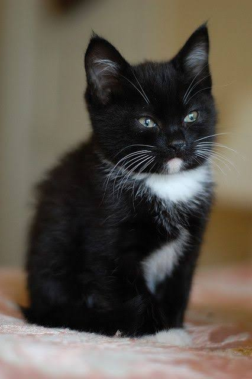
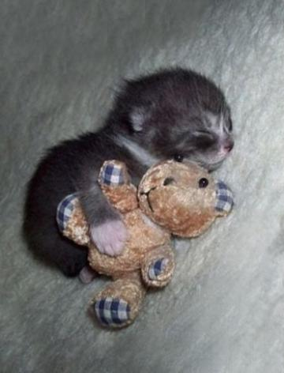
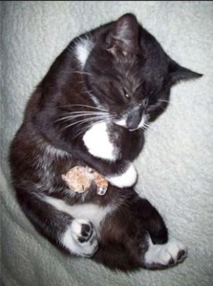

More story about my favoright pet
sometimes the smallest of unexpected changes can have a huge impact on our lives. Falling in love with a cat is no different than falling in love with a person. Sometimes, it’s love at first sight. That’s what happened for me when I first saw Ally: an adorable, black & white pipsqueak of a kitten with wide trusting eyes and ridiculously long whiskers. He jumped straight onto my lap, snuggled into the curve of my neck and started purring. And that’s it. I fell in love. Instantly.
No one is ever ready to adopt an animal. Animals are like humans, all have different personalities. Adopting an animal means you take on their previous baggage as much as they take on yours. When I first adopted Ally, I thought I was giving an animal a better life. Little did I know, he was doing the same for me.
Ally was initially a little overwhelmed by having access to an entire house, and spent most of that first weekend near or under my bed. After that, he relaxed a little and started exploring his new environment.
He grew into a beautiful cat, but that is not what I valued most about him. I loved him for his gentle energy and solid presence that created a quiet, peaceful space in my home, both physically and figuratively. After getting him, my life was consumed with wondering what he was doing, and thinking, “I better get home before he’s alone too long.”

I simply couldn’t achieve anything at home without his being involved. I could be making a cup of tea and he would meow in a circle whilst staring up at the mug until I could show him that it wasn’t something he actually wanted.
About Ally's favorite toy now & then


Ally's favorite food
Nutrish Cat wet-food
I love that the meals are made with real chicken or seafood–an ingredient that’s easy to spot. It’s equally important what you WON’T see in Nutrish; there’s never any grains, meat by-products or fillers, artificial flavors, colors or artificial preservatives–only essential vitamins and minerals.

Milk
Cats love the taste of milk because it is high in fat. They will often choose to drink it even if it results in an upset stomach. If your cat is fed a high quality, balanced diet they do not need the extra fat from drinking milk, no matter how much they like it.